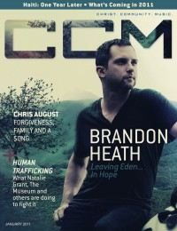

CCM Digital, Jan 2011
| Cover |
|---|
|  |
 Online Exclusively Online Exclusively |
| Writers in this Issue |
| Argyrakis, Andy Aspinwall, Grace S. Cartwright, Grace C. Conner, Matt Ferguson, Rachel Greer, Andrew Hoernschemeyer, Emily Jackson, Tom Lusk, Caroline |
Brandon Heath
Cover Feature:- Brandon Heath by Caroline Lusk
- "7x70: Chris August Embraces the cost of forgiveness and the price of freedom" by Caroline Lusk
- "2011: Expanding Our Walls" by Grace C. Cartwright
- "365 Days Later... Haiti's Still Hurting" by Caroline Lusk
- "Songs for the Generations" by Emily Hoernschemeyer
- "Passion [City]" by Emily HoernschemeyerPassion City Church, Atlanta; Louie Giglio
- "You Are More"
- "Music and the Many Sounds of Worship" by Rachel Ferguson
- Aaron Neville by Andrew Greer
- Donnie McClurkin by Andrew Greer
- Rachael Lampa by Matt Conner
- Philmont by Andy Argyrakis
- Scott Krippayne, Jeff Peabody by Andy Argyrakis
- The Chariot
- Hawk Nelson by Andrew Greer
- "Happy New Year!"
Reviews & New Releases:
- The Spark - Your Love Is Strong by Grace S. Aspinwall
- Bethel Music - Here is Love by Matt Conner
- Maranatha Praise - World's Greatest Praise & Worship Songs Vol. 2 by Andrew Greer
- Brandon Heath - Leaving Eden by Grace S. Aspinwall
- Scott Krippayne - Voyage by Andy Argyrakis
- Mastedon - Revolution of Mind by Andy Argyrakis
- Underoath - Ø (Disambiguation) by Matt Conner
- Rocky Loves Emily - American Dream by Matt Conner
- The Chariot - Long Live by Andrew Greer
- Derek Webb - Feedback by Andrew Greer
- Sleeping at Last - Yearbook: October by Andy Argyrakis
- Cellofourte - A String Tribute To Skillet by Grace S. Aspinwall
- various artists - Something on the Inside by Andrew Greer
- Byron Chambers - My Time by Andrew Greer
- Lecrae - Rehab by Matt Conner
- Kings of Leon - Come Around Sundown by Matt Conner
- Seal - 6: Commitment by Andy Argyrakis
- Bruce Springsteen - The Promise by Andy Argyrakis
- "Night Castle Tour, Allstate Arena, Rosemont, IL" by Andy Argyrakis
- "More than a Voice" by Caroline Lusk
- "Human Trafficking" by Matt Conner
- "Are You a Fine Metal or Goulash?" by Tom Jackson
© 2011 CMnexus. Last updated April 2021. Contact: editor -AT- cmnexus -DØT- org About